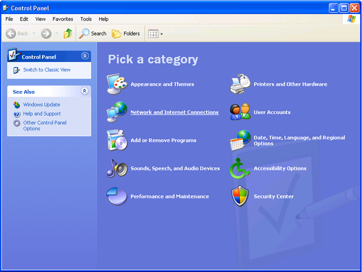
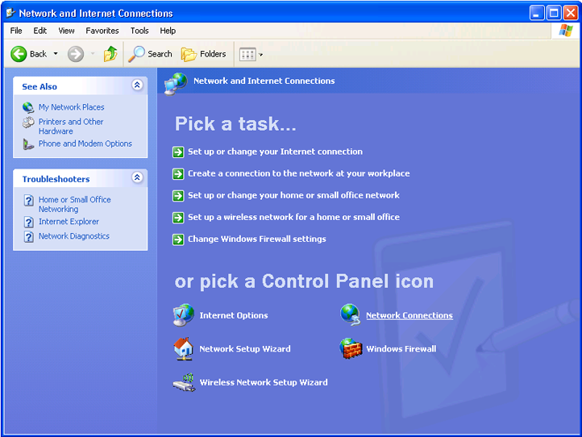
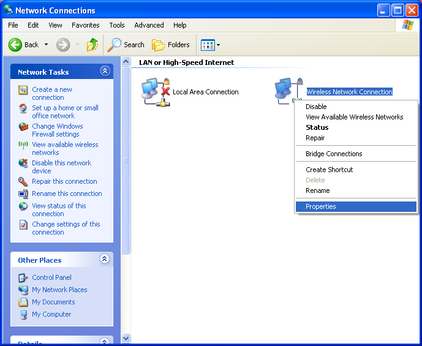
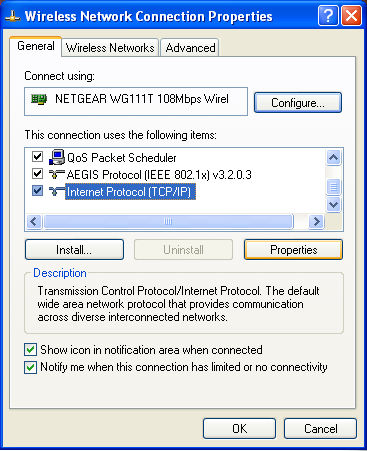
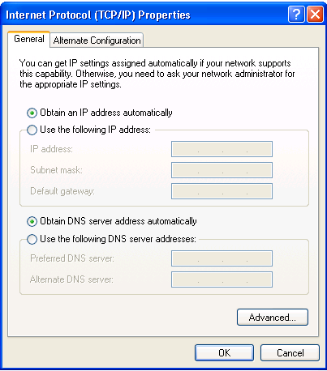

Step 1
To check that your wireless connection is enabled and configured correctly:
-
From your desktop, click on START and select CONTROL PANEL
-
From the Control Panel window, select Network and Internet Connections
 -
In the Network and Internet Connections window, select Network Connections
 -
In the Network Connections window, Right Click on the Wireless Connection icon
- In the menu that appears, if the top option is Enable, click on this to enable the wireless connection
- If the top option is Disable, click on Properties at the bottom of the menu
 -
In the Wireless Network Connection Properties window, scroll down in the ‘This connection uses the following items’ window until you see Internet Protocol (TCP/IP) – click this once, then select Properties
 -
By default TCP/IP should be configured to obtain the IP address and DNS automatically (from the router) as below:
 -
Restart your computer and open a web browser to check if you can now connect to the Internet. If you are still unable to connect to the Internet, go to Setting Up Wireless> Having Problems? Step 2.